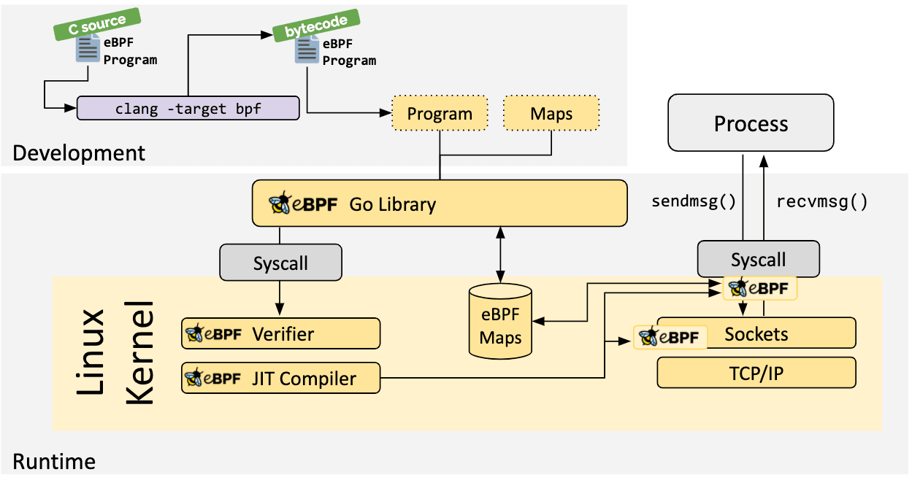

Diving into an eBPF + Go Example: Part 1
Preamble: In preparation for writing this I looked at some excellent content created by Liz Rice and Daniel Finneran - including videos, code and literature. I highly recommend checking out their work.
The Cilium eBPF documentation has some excellent examples of getting started with eBPF and Go. As a “hobbyist” programmer, I wanted to cement some of these concepts by digging deeper into one of the examples. Part of my learning style is to compile my own notes on a given topic, and this post is essentially that.
I’ve split this post into three sections - This (the first) covers compiling the C portion of an app to eBPF bytecode, the second part creating the complementary userspace application (in Go) that loads this eBPF program, in conjunction with interacting with a shared map. Lastly, a slightly different application digging a bit deeper into packet processing.

Source: https://ebpf.io/what-is-ebpf/
There’s an example eBPF C program from the ebpf-go.dev docs, which contains the following:
//go:build ignore
#include <linux/bpf.h>
#include <bpf/bpf_helpers.h>
struct {
__uint(type, BPF_MAP_TYPE_ARRAY);
__type(key, __u32);
__type(value, __u64);
__uint(max_entries, 1);
} pkt_count SEC(".maps");
// count_packets atomically increases a packet counter on every invocation.
SEC("xdp")
int count_packets() {
__u32 key = 0;
__u64 *count = bpf_map_lookup_elem(&pkt_count, &key);
if (count) {
__sync_fetch_and_add(count, 1);
}
return XDP_PASS;
}
char __license[] SEC("license") = "Dual MIT/GPL";
This is what we need to compile into eBPF bytecode. Let’s break it down, starting from the struct definition, which defines our map:
struct {
__uint(type, BPF_MAP_TYPE_ARRAY);
__type(key, __u32);
__type(value, __u64);
__uint(max_entries, 1);
} pkt_count SEC(".maps");
We could visually represent this as:
+----------------------------------------+
| eBPF Array Map |
| (pkt_count Map) |
+----------------------------------------+
| |
| Index | Key (__u32) | Value (__u64) |
|----------------------------------------|
| 0 | 0 | 0x0000 |
| | | |
+----------------------------------------+
We can think of BPF_MAP_TYPE_ARRAY as a generic array of key-value storage with a fixed number of rows (indexes).
eBPF has multiple map types:
enum bpf_map_type {
BPF_MAP_TYPE_UNSPEC,
BPF_MAP_TYPE_HASH,
BPF_MAP_TYPE_ARRAY,
BPF_MAP_TYPE_PROG_ARRAY,
BPF_MAP_TYPE_PERF_EVENT_ARRAY,
BPF_MAP_TYPE_PERCPU_HASH,
BPF_MAP_TYPE_PERCPU_ARRAY,
BPF_MAP_TYPE_STACK_TRACE,
BPF_MAP_TYPE_CGROUP_ARRAY,
BPF_MAP_TYPE_LRU_HASH,
BPF_MAP_TYPE_LRU_PERCPU_HASH,
BPF_MAP_TYPE_LPM_TRIE,
BPF_MAP_TYPE_ARRAY_OF_MAPS,
BPF_MAP_TYPE_HASH_OF_MAPS,
BPF_MAP_TYPE_DEVMAP,
BPF_MAP_TYPE_SOCKMAP,
....
Which map type used will influence its structure. As such, different map types are more suited for storing certain types of information.
As per the kernel docs, the key is an unsigned 32-bit integer.
value can be of any size. For this example, we use an unsigned 64-bit integer. We’re only counting a single, specific metric, therefore we can limit this map to a single index.
At the end of the struct, we define:
pkt_count SEC(".maps");
pkt_count is the name of the structure that defines the eBPF map. This name is used as a reference in the eBPF program to interact with it, such as retrieving information.
SEC(".maps"); Is a Macro used to define a section name for the given object in the resulting ELF file. This instructs the compiler to include the pkt_count structure to be placed in the ELF section called .maps
SEC("xdp")
int count_packets() {
}
The SEC("xdp") macro specifies that the function proceeding it (count_packets) is to be placed in the ELF section named xdp. This is effectively associating our code to a specific kernel hook.
This ELF section is used by the eBPF loader to recognise that this function is an XDP eBPF program. There are other program types other than XDP, for example, Kprobe, Uprobe, Tracepoint. Which we choose depends on what we want to accomplish. XDP is predominantly used with high-performance packet processing, and as we’re counting the number of packets, it’s ideal for this use case.
Expanding the function body:
SEC("xdp")
int count_packets() {
__u32 key = 0;
__u64 *count = bpf_map_lookup_elem(&pkt_count, &key);
if (count) {
__sync_fetch_and_add(count, 1);
}
return XDP_PASS;
}
__u32 key = 0; defines a local variable of key that we use to access the eBPF map entry. As our map only has 1 entry, we know we can reference this with a value of 0.
__u64 *count = bpf_map_lookup_elem(&pkt_count, &key); looks up an element in the pkt count map using the specified key. We’ll need this so we can increment it, which we do with:
if (count) {
__sync_fetch_and_add(count, 1);
}
return XDP_PASS;
Why use __sync_fetch_and_add instead of standard incrementing?
In high-throughput environments like network packet processing, we often have multiple execution contexts (like different CPU cores) that might access and update eBPF maps concurrently. Therefore, we need to ensure atomic operations on these structures for correctness and prevent data races.
Lastly, we return an integer value from the xdp_action enum, in this case a pass, but we could return other values:
enum xdp_action {
XDP_ABORTED = 0,
XDP_DROP,
XDP_PASS,
XDP_TX,
XDP_REDIRECT,
};
Next, let’s have a look at the user space application!